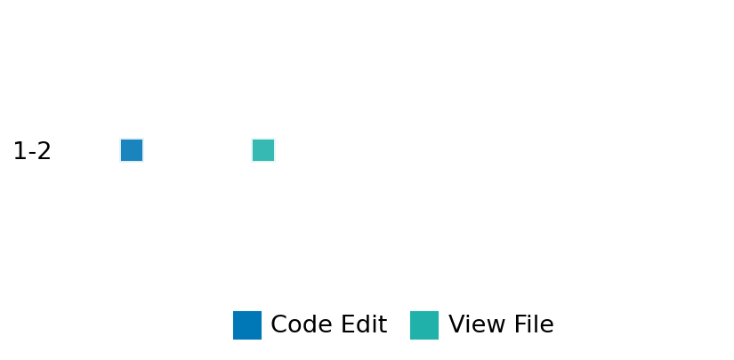

SETTING:
You're an autonomous programmer tasked with solving a specific problem. You are to use the commands defined below to accomplish this task. Every message you send incurs a cost—you will be informed of your usage and remaining budget by the system.
You will be evaluated based on the best-performing piece of code you produce, even if the final code doesn't work or compile (as long as it worked at some point and achieved a score, you will be eligible).
Apart from the default Python packages, you have access to the following additional packages:
- cryptography
- cvxpy
- cython
- dace
- dask
- diffrax
- ecos
- faiss-cpu
- hdbscan
- highspy
- jax
- networkx
- numba
- numpy
- ortools
- pandas
- pot
- psutil
- pulp
- pyomo
- python-sat
- pythran
- scikit-learn
- scipy
- sympy
- torch
YOUR TASK:
Your objective is to define a class named `Solver` in `solver.py` with a method:
```
class Solver:
def solve(self, problem, **kwargs) -> Any:
"""Your implementation goes here."""
...
```
IMPORTANT: Compilation time of your init function will not count towards your function's runtime.
This `solve` function will be the entrypoint called by the evaluation harness. Strive to align your class and method implementation as closely as possible with the desired performance criteria.
For each instance, your function can run for at most 10x the reference runtime for that instance. Strive to have your implementation run as fast as possible, while returning the same output as the reference function (for the same given input). Be creative and optimize your approach!
Your messages should include a short thought about what you should do, followed by a _SINGLE_ command. The command must be enclosed within ``` and ```, like so:
<Reasoning behind executing the command>
```
<command>
```
IMPORTANT: Each set of triple backticks (```) must always be on their own line, without any other words or anything else on that line.
Here are the commands available to you. Ensure you include one and only one of the following commands in each of your responses:
- `edit`: Replace a range of lines with new content in a file. This is how you can create files: if the file does not exist, it will be created. Here is an example:
```
edit
file: <file_name>
lines: <start_line>-<end_line>
---
<new_content>
---
```
The command will:
1. Delete the lines from <start_line> to <end_line> (inclusive)
2. Insert <new_content> starting at <start_line>
3. If both <start_line> and <end_line> are 0, <new_content> will be prepended to the file
Example:
edit
file: solver.py
lines: 5-7
---
def improved_function():
print("Optimized solution")
---
- `ls`: List all files in the current working directory.
- `view_file <file_name> [start_line]`: Display 100 lines of `<file_name>` starting from `start_line` (defaults to line 1).
- `revert`: Revert the code to the best-performing version thus far.
- `reference <string>`: Query the reference solver with a problem and receive its solution. If the problem's input is a list, this command would look like:
```
reference [1,2,3,4]
```
- `eval_input <string>`: Run your current solver implementation on the given input. This is the only command that shows stdout from your solver along with both solutions. Example:
```
eval_input [1,2,3,4]
```
- `eval`: Run evaluation on the current solution and report the results.
- `delete`: Delete a range of lines from a file using the format:
```
delete
file: <file_name>
lines: <start_line>-<end_line>
The command will delete the lines from <start_line> to <end_line> (inclusive)
Example:
delete
file: solver.py
lines: 5-10
```
- `profile <filename.py> <input>`: Profile your currently loaded solve method's performance on a given input. Shows the 25 most time-consuming lines. Requires specifying a python file (e.g., `solver.py`) for validation, though profiling runs on the current in-memory code.
Example:
```
profile solver.py [1, 2, 3]
```
- `profile_lines <filename.py> <line_number1, line_number2, ...> <input>`: Profiles the chosen lines of the currently loaded code on the given input. Requires specifying a python file for validation.
Example:
```
profile_lines solver.py 1,2,3 [1, 2, 3]
```
**TIPS:**
After each edit, a linter will automatically run to ensure code quality. If there are critical linter errors, your changes will not be applied, and you will receive the linter's error message. Typically, linter errors arise from issues like improper indentation—ensure your edits maintain proper code formatting.
**Cython Compilation:** Edits creating or modifying Cython (`.pyx`) files will automatically trigger a compilation attempt (requires a `setup.py`). You will be notified if compilation succeeds or fails. If it fails, the edit to the `.pyx` file will be automatically reverted.
If the code runs successfully without errors, the in-memory 'last known good code' will be updated to the new version. Following successful edits, you will receive a summary of your `solve` function's performance compared to the reference.
If you get stuck, try reverting your code and restarting your train of thought.
Do not put an if __name__ == "__main__": block in your code, as it will not be ran (only the solve function will).
Keep trying to better your code until you run out of money. Do not stop beforehand!
**GOALS:**
Your primary objective is to optimize the `solve` function to run as as fast as possible, while returning the optimal solution.
You will receive better scores the quicker your solution runs, and you will be penalized for exceeding the time limit or returning non-optimal solutions.
Below you find the description of the task you will have to solve. Read it carefully and understand what the problem is and what your solver should do.
**TASK DESCRIPTION:**
Convex Hull Task:
Given a set of points in 2D space, the task is to compute the convex hull of these points. The convex hull is the smallest convex polygon that contains all the given points.
Input: A dictionary with keys:
- "n": An integer representing the number of points.
- "points": A list of n lists, where each inner list contains two numbers [x, y] representing the coordinates of a point.
Example input:
{
"n": 6,
"points": [
[0.1, 0.2],
[0.5, 0.7],
[0.3, 0.1],
[0.9, 0.3],
[0.4, 0.8],
[0.7, 0.5]
]
}
Output: A dictionary with keys:
- "hull_vertices": A list of integers representing the indices of the points that form the convex hull in counter-clockwise order.
- "hull_points": A list of coordinate pairs [x, y] representing the points that form the convex hull in counter-clockwise order.
Example output:
{
"hull_vertices": [2, 0, 4, 3],
"hull_points": [
[0.3, 0.1],
[0.1, 0.2],
[0.4, 0.8],
[0.9, 0.3]
]
}
Notes:
- The convex hull must be represented as a list of points in counter-clockwise order.
- The first point in the hull_points list should not be repeated at the end.
- All original points must either be inside the hull or on its boundary.
- The resulting polygon must be convex, meaning all internal angles are less than 180 degrees.
Category: computational_geometry
Below is the reference implementation. Your function should run much quicker.
import random
from typing import Any
import numpy as np
from scipy.spatial import ConvexHull
| 01: def solve(self, problem: dict[str, Any]) -> dict[str, Any]:
| 02: """
| 03: Solve the Convex Hull problem using scipy.spatial.ConvexHull.
| 04:
| 05: :param problem: A dictionary representing the Convex Hull problem.
| 06: :return: A dictionary with keys:
| 07: "hull_vertices": List of indices of the points that form the convex hull.
| 08: "hull_points": List of coordinates of the points that form the convex hull.
| 09:
| 10:
| 11: NOTE: Your solution must pass validation by:
| 12: 1. Returning correctly formatted output
| 13: 2. Having no NaN or infinity values
| 14: 3. Matching expected results within numerical tolerance
| 15: """
| 16: points = problem["points"]
| 17: hull = ConvexHull(points)
| 18:
| 19: # Get the vertices of the convex hull
| 20: hull_vertices = hull.vertices.tolist()
| 21:
| 22: # Get the points that form the hull in order
| 23: hull_points = points[hull.vertices].tolist()
| 24:
| 25: solution = {"hull_vertices": hull_vertices, "hull_points": hull_points}
| 26:
| 27: return solution
| 28:
This function will be used to check if your solution is valid for a given problem. If it returns False, it means the solution is invalid:
import random
from typing import Any
import numpy as np
from scipy.spatial import ConvexHull
| 001: def _point_outside_hull( point: np.ndarray, hull_points: np.ndarray) -> bool:
| 002: """
| 003: Check if a point is outside the convex hull.
| 004:
| 005: :param point: A point (x, y).
| 006: :param hull_points: List of (x, y) coordinates of the hull vertices in counter-clockwise order.
| 007: :return: True if the point is outside the hull, False otherwise.
| 008: """
| 009: n = len(hull_points)
| 010: for i in range(n):
| 011: p1 = hull_points[i]
| 012: p2 = hull_points[(i + 1) % n]
| 013:
| 014: # Check if the point is to the right of the edge (p1, p2)
| 015: cross_product = (p2[0] - p1[0]) * (point[1] - p1[1]) - (p2[1] - p1[1]) * (
| 016: point[0] - p1[0]
| 017: )
| 018:
| 019: # If cross product is negative, the point is to the right of the edge (outside the hull)
| 020: if cross_product < -1e-9: # Using a small epsilon for numerical stability
| 021: return True
| 022:
| 023: return False
| 024:
| 025:
| 026: def is_solution( problem: dict[str, Any], solution: dict[str, Any]) -> bool:
| 027: """
| 028: Validate the Convex Hull solution.
| 029:
| 030: This method checks:
| 031: - The solution contains the keys 'hull_vertices' and 'hull_points'.
| 032: - The hull_vertices are valid indices into the original points array.
| 033: - The hull_points correspond to the correct points from the original array.
| 034: - The resulting polygon is convex.
| 035: - The hull contains all original points (either inside or on the boundary).
| 036:
| 037: :param problem: A dictionary representing the Convex Hull problem with key "points".
| 038: :param solution: A dictionary containing the solution with keys "hull_vertices" and "hull_points".
| 039: :return: True if solution is valid, else False.
| 040: """
| 041: points = problem.get("points")
| 042: if points is None:
| 043: logging.error("Problem does not contain 'points'.")
| 044: return False
| 045:
| 046: # Check that the solution contains the required keys.
| 047: for key in ["hull_vertices", "hull_points"]:
| 048: if key not in solution:
| 049: logging.error(f"Solution does not contain '{key}' key.")
| 050: return False
| 051:
| 052: try:
| 053: hull_vertices = np.array(solution["hull_vertices"], dtype=int)
| 054: hull_points = np.array(solution["hull_points"])
| 055: except Exception as e:
| 056: logging.error(f"Error converting solution lists to numpy arrays: {e}")
| 057: return False
| 058:
| 059: # Check that hull_vertices are valid indices
| 060: if np.any(hull_vertices < 0) or np.any(hull_vertices >= len(points)):
| 061: logging.error("Hull vertices contain invalid indices.")
| 062: return False
| 063:
| 064: # Check that hull_points correspond to the correct points
| 065: if not np.allclose(points[hull_vertices], hull_points, atol=1e-6):
| 066: logging.error(
| 067: "Hull points do not correspond to the correct indices in the original points array."
| 068: )
| 069: return False
| 070:
| 071: # Check that we have at least 3 points for a valid hull in 2D
| 072: if len(hull_vertices) < 3:
| 073: logging.error("Convex hull must have at least 3 vertices in 2D.")
| 074: return False
| 075:
| 076: # Check convexity by ensuring all internal angles are less than 180 degrees
| 077: n = len(hull_vertices)
| 078: for i in range(n):
| 079: prev_point = hull_points[i - 1]
| 080: curr_point = hull_points[i]
| 081: next_point = hull_points[(i + 1) % n]
| 082:
| 083: # Calculate vectors
| 084: v1 = np.array([curr_point[0] - prev_point[0], curr_point[1] - prev_point[1]])
| 085: v2 = np.array([next_point[0] - curr_point[0], next_point[1] - curr_point[1]])
| 086:
| 087: # Cross product should be positive for counter-clockwise ordering
| 088: cross_product = v1[0] * v2[1] - v1[1] * v2[0]
| 089: if cross_product < 0:
| 090: logging.error("Hull is not convex or not ordered counter-clockwise.")
| 091: return False
| 092:
| 093: # Check that all points are contained within or on the boundary of the hull
| 094: for point in points:
| 095: if _point_outside_hull(point, hull_points):
| 096: logging.error("Not all points are contained within the convex hull.")
| 097: return False
| 098:
| 099: return True
| 100:
 AlgoTuner Trajectory
AlgoTuner Trajectory
AlgoTune Task:
convex_hull
Model:
Claude Opus 4
Speedup
Fail
Total Budget
$1.00
Initial System Prompt
AlgoTune Task Description
Convex Hull Task:
Given a set of points in 2D space, the task is to compute the convex hull of these points. The convex hull is the smallest convex polygon that contains all the given points.
Input: A dictionary with keys:
- "n": An integer representing the number of points.
- "points": A list of n lists, where each inner list contains two numbers [x, y] representing the coordinates of a point.
Example input:
{
"n": 6,
"points": [
[0.1, 0.2],
[0.5, 0.7],
[0.3, 0.1],
[0.9, 0.3],
[0.4, 0.8],
[0.7, 0.5]
]
}
Output: A dictionary with keys:
- "hull_vertices": A list of integers representing the indices of the points that form the convex hull in counter-clockwise order.
- "hull_points": A list of coordinate pairs [x, y] representing the points that form the convex hull in counter-clockwise order.
Example output:
{
"hull_vertices": [2, 0, 4, 3],
"hull_points": [
[0.3, 0.1],
[0.1, 0.2],
[0.4, 0.8],
[0.9, 0.3]
]
}
Notes:
- The convex hull must be represented as a list of points in counter-clockwise order.
- The first point in the hull_points list should not be repeated at the end.
- All original points must either be inside the hull or on its boundary.
- The resulting polygon must be convex, meaning all internal angles are less than 180 degrees.
Category: computational_geometry
Reference Implementation
import random
from typing import Any
import numpy as np
from scipy.spatial import ConvexHull
def solve(self, problem: dict[str, Any]) -> dict[str, Any]:
"""
Solve the Convex Hull problem using scipy.spatial.ConvexHull.
:param problem: A dictionary representing the Convex Hull problem.
:return: A dictionary with keys:
"hull_vertices": List of indices of the points that form the convex hull.
"hull_points": List of coordinates of the points that form the convex hull.
NOTE: Your solution must pass validation by:
1. Returning correctly formatted output
2. Having no NaN or infinity values
3. Matching expected results within numerical tolerance
"""
points = problem["points"]
hull = ConvexHull(points)
# Get the vertices of the convex hull
hull_vertices = hull.vertices.tolist()
# Get the points that form the hull in order
hull_points = points[hull.vertices].tolist()
solution = {"hull_vertices": hull_vertices, "hull_points": hull_points}
return solutionBest AlgoTuner-Generated Code
solver.py
import numpy...
2025-07-01 04:12:38,567 - INFO - extract_code_blocks: Extracted block 21/22: eval_input {"n": 6, "points": [[0.1, 0.2], [0.5, 0...
2025-07-01 04:12:38,567 - INFO - extract_code_blocks: Extracted block 22/22: eval
2025-07-01 04:12:38,567 - INFO - PRE_TRAIL_CHECK: blocks=1, cmd_str='edit
file: solver.py
lines: 0-0Speedup vs Budget Plot
Speedup vs Budget
No performance data available for plotting
Action Sequence
